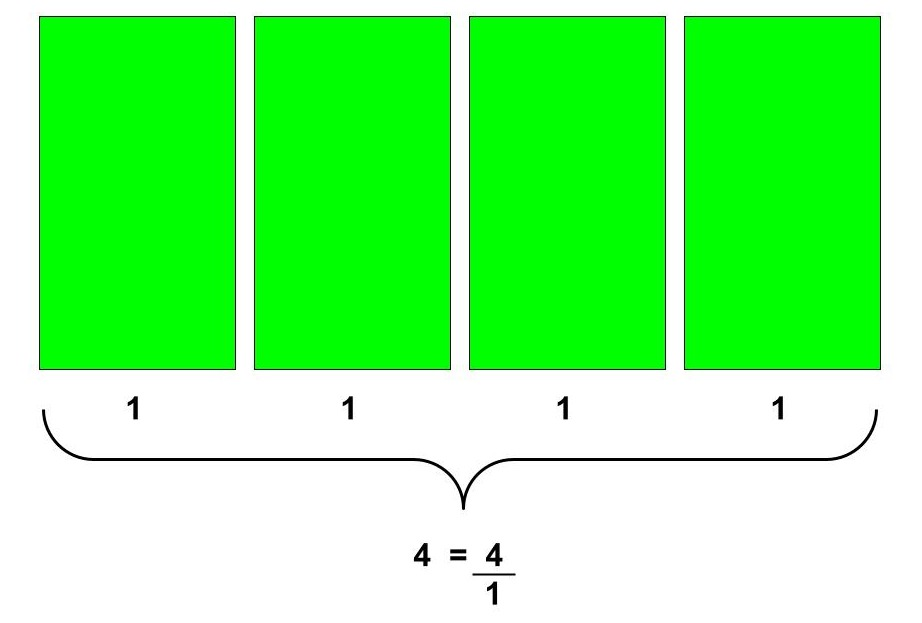

What You Should Know - Dash: Grocery Delivery
 Important Vocabulary
Important Vocabulary
- Program - tells a robot what to do, when, and under what conditions
- Conditions/Conditionals - instructions that depend on whether something is true or false
- Whole Number - counting numbers, not including fractions, decimals, or negative numbers (0, 1, 2, 3, and so on)
- Fraction - a part of a whole
- Numerator - number above a fraction line representing the number of parts taken out of the whole
- Denominator - number below a fraction line representing the total number of parts the whole is divided into
- Equivalent - the same value
How Do We Control Robots?
Robots need step-by-step instructions to do a job. They can only do what humans program them to do. A program tells a robot what to do, when, and under what conditions. Conditionals are instructions that depend on whether something is true or false. For example, imagine writing a program to help us decide what to wear outside each day. If the temperature is at or below freezing, the program should warn us to wear a snow jacket.
Sensors
Sensors collect information called input. Robot sensors gather information from the surroundings and send it to the computer brick (or the robot’s brain). Robot sensors can only be used when the robot’s program asks for information from them! Similarly, the robot can only act on information from the sensors if its program tells it to do so! The sensors send information through the wires (similar to the nervous system in the human body) that connect them to the computer brick, which uses the information if its program requires it.
How Do I Express Whole Numbers as Fractions?
All whole numbers can be expressed in fraction form. The whole number represents the numerator in a fraction form, and the value 1 represents the denominator. For example, the whole number 4 is represented as 4/1. The fraction 4/1 represents 4 wholes, and each whole represents 1 equal part. Here is a visual model of 4/1:

You can also express the value 1 as a fraction of equal parts. For example, the fraction 4/4 is equivalent to the whole number 1 because 4 parts out of 4 equal 1 whole. Here is a visual model of 4/4:

How Do I Compare Two Fractions with the Same Numerator or Denominator?
When comparing fractions, you want to consider the numerator and denominator to know how much a whole is represented.
When comparing fractions with the same numerator but different denominators, use a visual model to determine which fraction is greater. When comparing fractions, the whole you’re referring to must be the same. For example, if you’re comparing fractions of two pizzas, the pizzas should be the same size.
For example, when comparing 2/8 and 2/4, express each fraction visually. For example:

Based on the visual models, you will notice 2/8 represents less of 1 whole than 2/4. This comparison is represented mathematically by 2/8 < 2/4.
When comparing fractions with the same denominator but different numerators, compare the value of the numerators.
For example, when comparing 5/6 and 1/6, look at the numerators 5 and 1. 5 parts of 6 is greater than 1 part of 6; therefore, 5/6 is greater than 1/6. This comparison is represented mathematically by 5/6 > 1/6.
Career Connection and Real-World Application
Video Game Programmer
A video game programmer designs and develops the fascinating and sometimes realistic games played on a game console. Video game programmers are the engineers of the game world and use complex mathematics to develop video games. The use of fractions and the ability to compare fractions are necessary when developing scale models. An example of a scale model in a video game would be creating a smaller version of a city for the user to navigate within the game.

Computer Programmer
One of the responsibilities of a computer programmer is to write the code, or set of instructions, that tells the robot what to do. Some computer codes use fractions. In that case, a computer programmer must understand the difference between the numerator and the denominator. The computer programmer must also understand how to express fractions to include fraction values within the code.

Household Robots
Though you may not have a robot butler in your home, robots can be used to help people.
Many people do not want to spend time or energy doing chores around the house, like vacuuming. This led to the creation of vacuum robots, like the Roomba. These vacuums can travel around the house when charged, cleaning up dirt and dust on the ground. Sensors allow them to detect when they reach a wall or other obstacle, causing them to change their direction.
Roomba has made some changes to its robot vacuums. These robots can now map out your home. They use machine vision and built-in cameras to identify specific pieces of furniture in your house, like couches, tables, and kitchen counters. They can even save the maps it creates and use them to improve its cleaning patterns. It also lets you name various rooms in your home so you can tell the vacuum to clean a particular space and ignore others. As the robot logs these objects, it’ll make suggestions to the user to add them to its internal map as “clean zones” — specific areas of your house you can direct your Roomba to clean, either via the app or a connected digital assistant like Alexa.